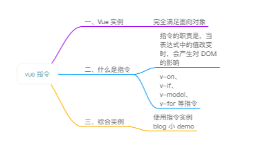
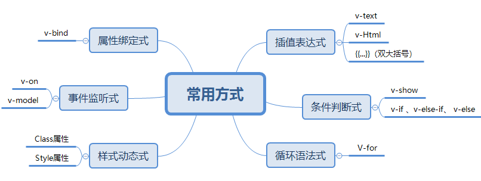
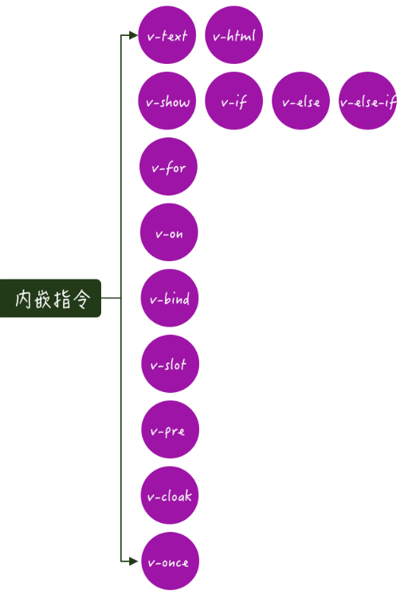
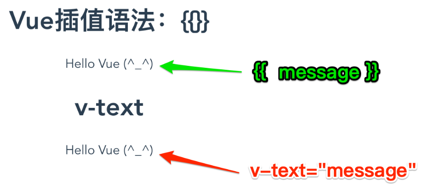
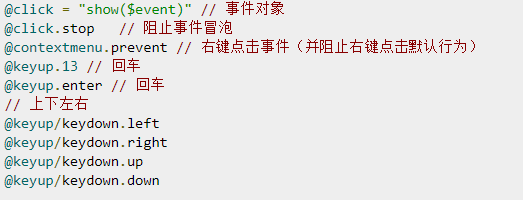
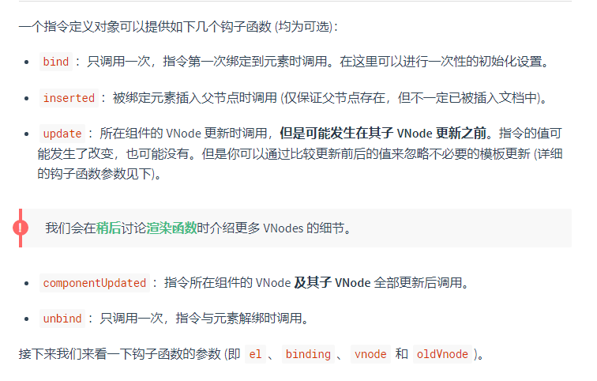
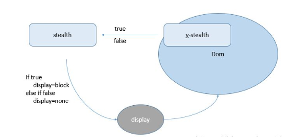
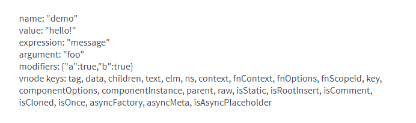

在上一篇中，我们已经对组件有了更加进一步的认识，从组件的创建构造器到组件的组成，进而到组件的使用,.从组件的基本使用、组件属性，以及自定义事件实现父子通讯和巧妙运用插槽slot分发内容，进一步的认识到组件在Vue中的核心地位.。
而今天，我们将对vue中的基本指令进行了解汇总，何为指令？
指令在Vue中是个很重要的功能，在Vue项目中是必不可少的。根据官网的介绍，指令 (Directives) 是带有 v- 前缀的特殊属性。指令的职责是，当表达式的值改变时，将其产生的连带影响，响应式地作用于 DOM。
今天的内容，是对Vue指令进行说明，什么是指令，以及常用的指令方式和在开发中使用的方式

根据常用的指令，进行归类总结，依据不同的方式，形成不同的表达方式，大致可分为以下这些，具体详细的很有很多，欢迎指点


一、插值表达式
（一）V-text: 更新解析标签包含的文本，输出文本
<div id="app">
<div v-text="message"></div>
</div>
<script>
new Vue({
el: '#app',
data: {
message: 'vue的初次学习'
}
})
</script>
（二） V-Html: 解析html标签，用于输出html 代码
<div id="app">
<div v-text="message"></div>
</div>
<script>
new Vue({
el: '#app',
data: {
message: '<h1>vue的初次学习</h1>'
}
})
</script>（三） {{...}}（双大括号）:
<div id="app">
<div>{{ message }}</div>
</div>
<script>
new Vue({
el: '#app',
data: {
message: 'vue的初次学习'
}
})
</script>二、条件判断式
(一) V-show ：用来控制元素的显示/隐藏 ，主要是控制元素的display css属性的。v-show 指令的取值为true/false，分别对应着显示/隐藏
<li class="nav-item" v-show="isShow">
<a href="/ ">艾三元</a>
</li>
<script type="text/javascript">
new Vue({
el: '#app',
data: {
isShow: false
}
})
</script>(二) v-if 、v-else-if、 v-else 指令: v-if 指令的取值是为true或false,通过一定的条件，控制元素是否被渲染出来。
<div id="app">
<div v-if="seen>10">现在你看到我了</div>
<div v-else-if="seen>6">
<p>哈哈哈，你又看到我了！！！</p>
</div>
<div v-else>现在你看到我了</div>
</div>
<script>
new Vue({
el: '#app',
data: {
seen:5
}
})
</script>注意：
1、 v-show 其用法和 v-if 相同也可以设置元素的显示或隐藏。但是不具备条件判断功能
2、 v-else、v-else-if 可以给v-if 设置一个 else 模块、else-if模块
3、 v-else 、v-else-if 必须要跟在 v-if 或v-else-if 模块后面
三、循环语法式
(一) V-for: 指令需要以 site in sites 形式的特殊语法， sites 是源数据数组并且 site 是数组元素迭代的别名(有时候，我们的data中的存放的数据不是个简单的数字或者字符串，而是数组Array类型，这个时候，我们要把数组的元素展示在视图上，就需要用到vue提供的 v-for 指令，来实现列表的渲染)
迭代数组：
<div id="app">
<ol>
<li v-for="site in sites">
{{ site.name }}
</li>
</ol>
</div>
<script>
new Vue({
el: '#app',
data: {
sites: [
{name: 'i3yuan'},
{name: 'Google'},
{name: 'baidu'}
]
}
})
</script>属性：
<div v-for="(val, key, i) in userInfo">
{{val}} --- {{key}} --- {{i}}
</div>
其中：【userinfo】是一个对象
迭代数字
<p v-for="i in 10">这是第 {{i}} 个P标签</p>
四、属性绑定式
（一）v-bind:绑定属性的指令。动态属性，动态绑定DOM元素的属性,就是在特性中存在变量。
三种方法：
1、对象型 '{red:isred}'
2、三元型 'isred?"red":"blue"'
3、数组型 '[{red:"isred"},{blue:"isblue"}]'
<input type="button" value="按钮" v-bind:title="mytitle + 'ai'">
<script>
var vm = new Vue({
el: '#app',
data: {
mytitle: '这是一个自定义title'
},
methods: {
show: function() {
alert('Hello')
}
}
})
</script>五、事件监听式
(一) v-on: 绑定事件监听器。事件类型由参数给标签绑定函数，可以缩写为@，例如绑定一个点击函数 函数必须写在methods里面
<div id="app">
<!-- `show` 是在下面定义的方法名 -->
<button v-on:click="show">show</button>
</div>
<script>
var app = new Vue({
el: '#app',
data: {
name: 'demo'
},
// 在 `methods` 对象中定义方法
methods: {
show: function(event) {
// `this` 在方法里指当前 Vue 实例
alert('Hello ' + this.name + '!')
// `event` 是原生 DOM 事件
if(event) {
alert(event.target.tagName)
}
}
}
})
</script>（二）事件修饰符
1. @click.stop 阻止冒泡
<div id=’app’>
<!-- 使用 .stop 阻止冒泡 -->
<div class="inner" @click="div1Handler">
<input type="button" value="戳他" @click.stop="btnHandler">
</div>
</div>2. @click.prevent 阻止默认事件,并阻止右键点击
<!-- 使用 .prevent 阻止默认行为 -->
<a href="http://www.baidu.com" @click.prevent="linkClick">有问题，先去百度</a>3. @click.capture 添加事件侦听器时使用事件捕获模式
<!-- 使用 .capture 实现捕获触发事件的机制 -->
<div class="inner" @click.capture="div1Handler">
<input type="button" value="戳他" @click="btnHandler">
</div>4. @click.self 只当事件在该元素本身（比如不是子元素）触发时触发回调
<!-- 使用 .self 实现只有点击当前元素时候，才会触发事件处理函数 -->
<div class="inner" @click.self="div1Handler">
<input type="button" value="戳他" @click="btnHandler">
</div>5. @click.once 事件只触发一次
<!-- 使用 .once 只触发一次事件处理函数 -->
<a href="http://www.baidu.com" @click.prevent.once="linkClick">有问题，先去百度</a> （三） 按键修饰符
允许为v-on在监听键盘事件时添加按键修饰符

<input v-on:keyup.enter="submit">
V-on:keydown--- @keydown.left/@keydown.right/@keydown.up/@keydown.down
<input v-on:keydown.left=”submit”>六、样式动态式
(一) Class属性的绑定：
1. 根据数据的值，加载出我们对应的Class值。
<div id="app">
<div v-bind:class="{ active: isActive }"></div>
</div>
<style>
.active {
width: 100px;
height: 100px;
background: green;
}
</style>
<script>
new Vue({
el: '#app',
data: {
isActive: true
}
})
</script>2.根据数据方式，修改class实现多种样式。即v-bind:class={'',''} 绑定数组的方式
<div id="app">
<div v-bind:class="[activeClass, errorClass]"></div>
<!--另一种方式-->
<div v-bind:class="[errorClass ,isActive ? activeClass : '']"></div>
</div>
<style>
active {
width: 100px;
height: 100px;
background: green;
}
.text-danger {
background: red;
}
</style>
<script>
new Vue({
el: '#app',
data: {
isActive: true,
activeClass: 'active',
errorClass: 'text-danger'
}
})
</script>(二) Style属性的绑定——内联样式：v-bind:style
CSS 属性名可以用驼峰式 (camelCase) 或短横线分隔 (kebab-case，记得用引号括起来) 来命名：
1. 直接设置样式：
<div id="app">
<div v-bind:style="{ color: activeColor, fontSize: fontSize + 'px' }">测试内联样式</div>
</div>2. 绑定样式对象：
<div id="app">
<div v-bind:style="styleObject"></div>
</div>
<script>
new Vue({
el: '#app',
data: {
styleObject: {
color: red,
fontSize: '10px'
}
}
})
</script>3.绑定多个样式对象：
<div id="app">
<div v-bind:style="[baseStyles, overridingStyles]"></div>
</div>
<script>
new Vue({
el: '#app',
data: {
baseStyles: {
color: red,
fontSize: '10px'
},
overridingStyles: {
'font-weight': 'bold'
}
}
})
</script>注意：一个包含多个值的数组，常用于提供多个带前缀的值，
例如：<div :style="{ display: ['-webkit-box', '-ms-flexbox', 'flex'] }"></div>
这样写只会渲染数组中最后一个被浏览器支持的值。在本例中，如果浏览器支持不带浏览器前缀的 flexbox，那么就只会渲染 display: flex。
七、自定义指令
Vue除了内置的默认指令以外，也允许注册自定义指令，当需要对普通 DOM 元素进行底层操作，这时候就会用到自定义指令
一、注册方式
1.全局注册方式：
<input v-focus>
// 注册一个全局自定义指令 `v-focus`
Vue.directive('focus', {
// 当被绑定的元素插入到 DOM 中时……
inserted: function (el) {
// 聚焦元素
el.focus()
}
})2.局部注册方式;
<input v-focus>
// 注册一个全局自定义指令 `v-focus`
directives: {
focus: {
// 指令的定义
inserted: function (el) {
el.focus()
}
}
}二、钩子函数

// 钩子函数的使用
Vue.directive("demo",{
// 自定义指令第一次绑定到元素时调用
bind:function(){
console.log("自定义指令第一次绑定到元素时调用")
},
//这里指的是inserted函数中定义的效果实现才被调用（被绑定元素插入父节点时调用）
inserted:function(el){
el.style.color = 'red'
console.log("也就是当自定义指令的元素上的文字变成红色就调用")
},
// 绑定的元素更新时调用
// 修改前: 绑定的元素是<div v-test>自定义指令的学习</div>
// 修改后: 绑定的元素是<div v-test>自定义指令的学习与使用</div>，改变时（注意是改变时，不是改变后，改变后触发的钩子函数是下面的componentUpdated函数）触发
update:function(){
console.log("绑定的元素更新时调用")
},
// 绑定的元素更新后调用
componentUpdated:function(){
console.log("绑定的元素更新后调用")
},
// 自定义指令和dom元素解绑后执行
unbind:function(){
console.log("自定义指令和dom元素解绑后执行（也就是v-text自定义指令在dom元素上移除后）")
}
})
三、钩子函数参数
el：指令所绑定的元素，可以用来直接操作 DOM 。binding：一个对象，包含以下属性：
name：指令名，不包括 v- 前缀。value：指令的绑定值，例如：v-my-directive="1 + 1" 中，绑定值为 2。oldValue：指令绑定的前一个值，仅在 update 和 componentUpdated 钩子中可用。无论值是否改变都可用。expression：字符串形式的指令表达式。例如 v-my-directive="1 + 1" 中，表达式为 "1 + 1"。arg：传给指令的参数，可选。例如 v-my-directive:foo 中，参数为 "foo"。modifiers：一个包含修饰符的对象。例如：v-my-directive.foo.bar 中，修饰符对象为 { foo: true, bar: true }。vnode：Vue 编译生成的虚拟节点。移步 VNode API 来了解更多详情。oldVnode：上一个虚拟节点，仅在 update 和 componentUpdated 钩子中可用。注意：除了 el 之外，其它参数都应该是只读的，切勿进行修改。如果需要在钩子之间共享数据，建议通过元素的 dataset 来进行。
<div id="hook-arguments-example" v-demo:foo.a.b="message"></div>
Vue.directive('demo', {
bind: function (el, binding, vnode) { //这里的el指的就是当前指令绑定的DOM元素; binding //返回的是一个对象，包含有以下属性：
var s = JSON.stringify
el.innerHTML =
'name: ' + s(binding.name) + '<br>' +
'value: ' + s(binding.value) + '<br>' +
'expression: ' + s(binding.expression) + '<br>' +
'argument: ' + s(binding.arg) + '<br>' +
'modifiers: ' + s(binding.modifiers) + '<br>' +
'vnode keys: ' + Object.keys(vnode).join(', ')
}
})
new Vue({
el: '#hook-arguments-example',
data: {
message: 'hello!'
}
})
四、动态指令参数
指令的参数可以是动态的。
例如，在 v-mydirective:[argument]="value" 中，argument 参数可以根据组件实例数据进行更新！这使得自定义指令可以在应用中被灵活使用。
<div id="dynamicexample">
<h3>Scroll down inside this section ↓</h3>
<p v-pin:[direction]="200">I am pinned onto the page at 200px to the left.</p>
</div>
Vue.directive('pin', {
bind: function (el, binding, vnode) {
el.style.position = 'fixed'
var s = (binding.arg == 'left' ? 'left' : 'top')
el.style[s] = binding.value + 'px'
}
})
new Vue({
el: '#dynamicexample',
data: function () {
return {
direction: 'left'
}
}
})1.以上是vue中，常用的基本指令，不同的指令有着不同的效果，实现的方式不一样，所能展现的功能也不同，因此，通过使用指令，可以更好的提高开发效率
2.参考官方文档
3.下一篇将对Vue的生命周期进行详细说明。